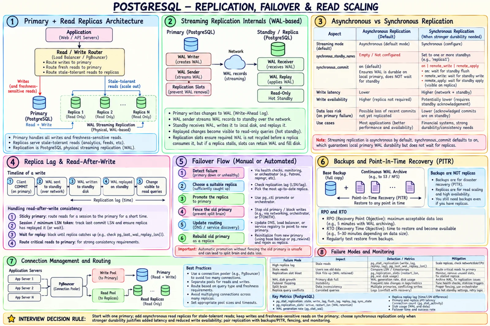

Topic · PostgreSQL
PostgreSQL Replication and Failover
WAL streaming to replicas scales stale-tolerant reads; safe failover, slots, backups, and pooling keep it running.


Quick Revision
- Writes, locking reads, fresh reads → primary; stale-tolerant reads → replicas.
- Streaming is async by default; sync needs
synchronous_standby_names. - Read-after-write: sticky primary or minimum LSN.
- Failover without fencing = split brain.
- Inactive replication slot can fill the primary's disk.
- Replicas aren't backups - base backup + WAL archive + restore drills.
Read routing
App → write/fresh pool → Primary ──WAL──▶ Replica 1, 2, ... App → stale-tolerant pool → Replicas
- Primary - writes, read-after-write, locking reads, correctness decisions.
- Replicas - feeds, reports, analytics, search hydration, heavy read-only work.
- Sticky primary briefly after a write.
- Return commit LSN; pick a replica that replayed it.
- Wait for replay within a timeout.
- Sync replication with
remote_apply. - Update the hot object in cache after commit.
Async vs sync
| Mode | Benefit | Cost |
|---|---|---|
| Async | Low write latency; replica outage doesn't block commits | Recent commits lost on failover; stale reads |
| Sync | Durable on standby after ack | Commit latency; possible write unavailability |
remote_apply | Standby has replayed and can serve it | Longest wait |
synchronous_commit = on (default) = local WAL flush. Without synchronous standbys, replication stays async.
Failover
- Detect primary failure.
- Confirm via a reliable control plane - not one ambiguous timeout.
- Pick a sufficiently current replica (by LSN/lag).
- Promote it.
- Fence the old primary.
- Update routing, discovery, proxies, pools.
- Rebuild the old primary as a replica on the new timeline.
- Verify writes, replication, backups, app health.
Slots, backups, and pools
- Replication slots - keep WAL until the consumer reads it; a stopped consumer fills the disk. Monitor activity, retained bytes, lag, disk, abandoned slots.
- Backups - replicas copy deletions and corruption. Use base backups, continuous WAL archiving, tested PITR, retention matching RPO/compliance, restore drills. RPO = max data loss; RTO = max recovery time.
- Connections - each costs memory. PgBouncer, bounded pool per node, separate primary/replica pools, size from DB concurrency, monitor waits. Transaction pooling breaks session state, temp tables, prepared statements, advisory locks.
Trade-offs
| Choice | Benefit | Cost |
|---|---|---|
| Async replication | Fast writes, available | Lag, possible data loss |
| Sync replication | Stronger durability | Latency, write availability |
| Read replicas | Scale stale-tolerant reads | No write scaling; routing |
| PgBouncer transaction pooling | Stops connection explosions | Session features need care |
Failure modes
- Connection storm - bounded pools, PgBouncer, admission control.
- Stale replica reads - primary routing, LSN token, wait, or explicit staleness.
- False 404 after create - warm cache, sticky primary, min LSN.
- Stale replica promoted - choose by LSN; align mode with RPO.
- Split brain - fencing, quorum/lease, single failover authority.
- Slot fills disk - alert on retained bytes; remove abandoned slots safely.
- Replica query vs WAL replay conflict - workload limits, dedicated analytics replica.
- Backup won't restore - automated drills, RPO/RTO checks.
Interview practice
Answer aloud, then reveal.
How do replicas scale reads?
They replay WAL and serve read-only queries - more read capacity, no extra write capacity, possibly stale.
Guarantee read-after-write from a replica?
Return the commit LSN; route only to replicas past it, else wait or use primary.
Why back up if you have replicas?
Replicas mirror mistakes. Backups + WAL archive give history and DR.
Danger of replication slots?
A stopped consumer makes the primary retain WAL until the disk fills.
Make failover safe?
Promote a current replica, fence the old primary, switch routing atomically, rebuild replicas, check the timeline; match replication mode to RPO.